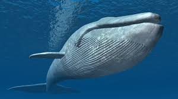

ballena jorobada

- Hábitat y Estilo de Vida: Las ballenas jorobadas son animales migratorios que viven en los océanos de todo el mundo. Pasan los veranos en aguas frías alimentándose de krill y otros pequeños crustáceos, y los inviernos en aguas más cálidas para reproducirse. Son animales sociales que viajan en grupos o manadas.
- Aletas pectorales excepcionalmente largas (hasta un tercio de su longitud corporal).
- Joroba prominente en la espalda.
- Cantos complejos y elaborados utilizados para la comunicación y el cortejo.
- Alimentación por filtración, utilizando barbas para atrapar el krill.
- Realizan saltos acrobáticos espectaculares fuera del agua ("breaching").
menu